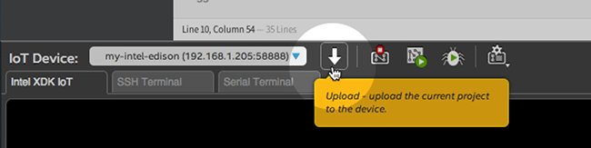
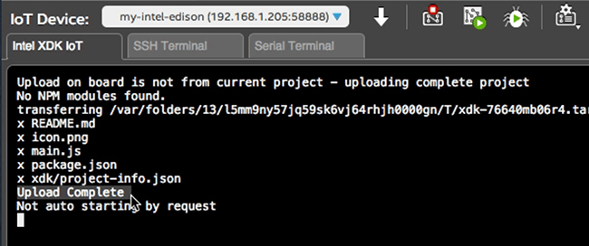
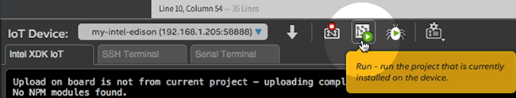
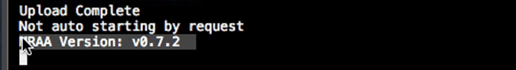
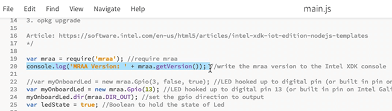

-
In the bottom toolbar, click the “Upload” icon to upload the current project to the device.

-
Check the console log for a message confirming the upload.

-
In the bottom toolbar, click the “Run” icon to run the project that is currently uploaded.

-
Keep an eye on the console for any runtime errors. If there are no errors, you should see the MRAA library version number outputted to the console.

console.log('MRAA Version: ' + mraa.getVersion());was declared in the app code on line 20:
If you see a version number outputted, your Intel® Edison is running its first app!
Get a “cannot find module mraa” message?

Refer to the instructions in the XDK troubleshooting guide.